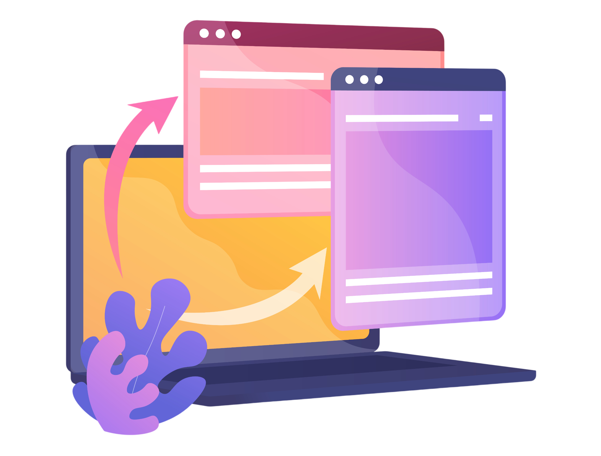

Référentiel RNCP
Gérer le patrimoine informatique
Répondre aux incidents et aux demandes d’assistance et d’évolution
Développer la présence en ligne de l’organisation
Travailler en mode projet
Mettre à disposition des utilisateurs un service informatique
Organisation
Tableau de synthèse
Projets
Projet 1 - Hackathon n°1
Contexte général
Ce hackathon consiste à reproduire le fonctionnement d'une entreprise informatique afin de développer des compétences en support, gestion de services et travail en équipe. Les membres des équipes doivent organiser un projet, gérer des infrastructures et répondre à des incidents via un système de tickets. Chaque membre a un rôle précis (chef de projet, support, infra, marketing/dev) pour assurer le bon fonctionnement de l’équipe.
C1 – Recensement et identification des ressources numériques

→ Ce que j'ai réalisé : acquérir une vision claire du système d’information.
1. Recensement des machines présentes sur le réseau afin d’identifier les postes de travail, serveurs et équipements connectés.
2. Inventaire des logiciels installés sur les différents postes pour connaître les outils utilisés dans l’environnement de travail.
3. Identification et recensement des utilisateurs présents dans le réseau afin de mieux comprendre l’organisation des accès et des profils.
C7 – Collecte, suivi et orientation des demandes

→ Ce que j'ai réalisé : gérer les demandes utilisateurs et assurer leur traitement.
1. Collecte et suivi des incidents signalés par les utilisateurs afin de centraliser les problèmes rencontrés.
2. Gestion des tickets de support en assurant leur enregistrement, leur mise à jour et leur suivi jusqu’à résolution.
3. Priorisation des demandes en fonction de leur gravité et de leur impact sur le fonctionnement du service.
C11 - Référencement des services en ligne de l’organisation et mesure de leur visibilité

→ Ce que j'ai réalisé : augmenter la présence en ligne de l’entreprise et améliorer son accessibilité
1. Amélioration de la visibilité de l’entreprise sur les services en ligne afin de faciliter l’accès aux utilisateurs et renforcer sa présence numérique
2. Analyse du parcours utilisateur pour identifier les points d’amélioration et optimiser l’expérience de navigation
3. Mise en place ou adaptation de fonctionnalités personnalisées afin de répondre plus efficacement aux besoins des utilisateurs
C14 - Planification des activités
→ Ce que j'ai réalisé : assurer la coordination et l’organisation des tâches au sein de l’équipe
1. Organisation des tâches sur Trello afin de structurer le travail et répartir les missions entre les membres de l’équipe
2. Suivi de l’avancement des tâches pour vérifier leur progression et s’assurer du respect des délais
3. Estimation des durées de réalisation des tâches afin d’optimiser la planification et la gestion du temps
C17 - Déploiement d’un service
→ Ce que j'ai réalisé : déployer différents services afin de répondre aux besoins du client
1. Mise à disposition du service GLPI afin de gérer le support et le suivi des incidents utilisateurs
2. Création et mise en ligne d’une landing page pour présenter le service et faciliter l’accès des utilisateurs
3. Déploiement d’un service de base de données pour assurer le stockage et la gestion des informations
4. Mise en place d’une solution cloud afin de garantir l’accessibilité et la disponibilité des services
Projet 2 - Hackathon n°2
Contexte général
Ce projet consistait à déployer le backend et le frontend d’une application web pour une entreprise fictive. Cette application comportait des failles de sécurité qu’il fallait identifier, analyser et recenser, puis corriger afin de la sécuriser. L’ensemble du travail devait être coordonné au sein de l’équipe, chaque membre ayant un rôle défini.
C3 – Mise en place et vérification des niveaux d’habilitation associés à un service
→ Ce que j'ai réalisé : mettre en place et configurer les droits d'accès des utilisateurs en fonction de leur rôle
1. Test sur l'application des fonctionnalités utilisateurs
2. Définition des rôles utilisateurs et des niveaux d’accès associés
3. Attribution des droits d’accès aux utilisateurs selon leur profil
4. Vérification des permissions en testant l’accès avec différents comptes utilisateurs
C9 – Traitement des demandes concernant les applications
→ Ce que j'ai réalisé : gérer les demandes des utilisateurs liées aux applications
1. Collecte et suivi des incidents liés aux applications afin d’identifier les dysfonctionnements rencontrés par les utilisateurs
2. Gestion des tickets de support en assurant leur création, leur mise à jour et leur résolution
3. Gestion des priorités basée sur la gravité
C13 - Analyse des objectifs et des modalités d’organisation d’un projet
→ Ce que j'ai réalisé : assurer la coordination entre les membres de l'équipe
1. Organisation des taches sur Trello
2. Suivi des taches
3. Estimation des durées